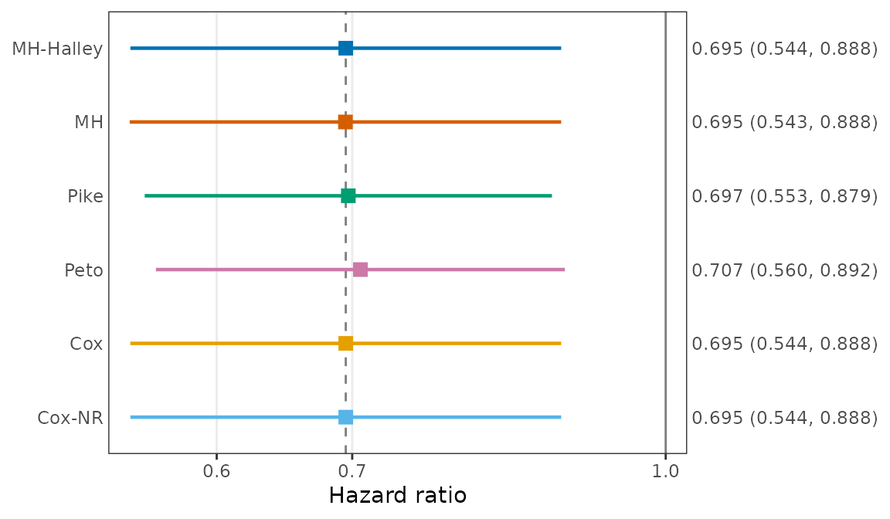

The estimator
onestepcox provides closed-form estimators of the hazard
ratio of a two-group comparison of survival data that approximate the
Cox partial likelihood estimator. The main estimator of the package,
called MH-Halley, starts from the Mantel-Haenszel estimate of the log
hazard ratio and takes one Halley step on the Cox score equation. With
eta0 the Mantel-Haenszel estimate and U,
I, J, and L the score and its
negative first, second, and third derivatives at eta0, the
estimate and its standard error are
d = 2 U I / (2 I^2 + U J)
eta1 = eta0 + d
se = (I + J d + L d^2 / 2)^(-1/2)The anchor is in closed form and the step is taken once, so no
iteration is needed, and U, I, J,
and L are computed in the same pass over the risk sets.
Under proportional hazards, the Mantel-Haenszel and Cox estimators are
both root-n consistent for the log hazard ratio, so they differ by a
term of order n^(-1/2) in probability. The error of a
Halley step is of the third order in the error of its starting value, so
the MH-Halley estimate differs from the Cox estimate by a term of order
n^(-3/2) in probability.
Estimating the hazard ratio
EstHR() takes a formula and a data frame, as
survival::coxph() does, or vectors of times, event
indicators, and group labels. The argument method selects
one or more estimators. The example below uses the German Breast Cancer
Study Group data in the survival package and compares
hormonal therapy with no hormonal therapy (variable
hormon).
est <- EstHR(Surv(rfstime, status) ~ hormon, data = survival::gbsg,
method = c("MH_Halley", "MH", "Pike", "Peto", "Cox", "Cox_NR"))
est
#> Hazard ratio of the treatment group relative to the control group
#>
#> Treatment (1): n = 246, events = 94
#> Control (0): n = 440, events = 205
#> Ties: efron
#>
#> coef exp(coef) se(coef) z Pr(>|z|)
#> MH_Halley -0.3640 0.6949 0.1250 -2.911 0.00360
#> MH -0.3644 0.6946 0.1252 -2.910 0.00362
#> Pike -0.3611 0.6969 0.1182 -3.055 0.00225
#> Peto -0.3474 0.7066 0.1187 -2.927 0.00343
#> Cox -0.3640 0.6949 0.1250 -2.911 0.00360
#> Cox_NR -0.3640 0.6949 0.1250 -2.911 0.00360
#>
#> exp(coef) lower .95 upper .95
#> MH_Halley 0.6949 0.5438 0.8879
#> MH 0.6946 0.5434 0.8879
#> Pike 0.6969 0.5528 0.8786
#> Peto 0.7066 0.5599 0.8916
#> Cox 0.6949 0.5438 0.8879
#> Cox_NR 0.6949 0.5438 0.8879
#>
#> Methods:
#> MH_Halley Halley step from the Mantel-Haenszel estimate (proposed)
#> MH Mantel-Haenszel estimate
#> Pike Pike estimate
#> Peto Peto estimate
#> Cox Cox estimate by survival::coxph()
#> Cox_NR Cox estimate by Newton-Raphson iterationThe treatment group has hormon equal to 1 (hormonal
therapy), and the control group has hormon equal to 0:
without the argument control, the control group is the
smallest value of the group variable, or the first level of a
factor.
"Cox" is the estimate of survival::coxph()
with a tight convergence tolerance, and "Cox_NR" is the Cox
estimate computed by Newton-Raphson iteration on the same risk-set
summaries as the closed-form estimators, until the Newton step is
negligible. The MH-Halley estimate of the hazard ratio is 0.6949, and
the Cox estimate ("Cox_NR") is 0.6949. Their log hazard
ratios differ by 4.2 × 10-12, and the Mantel-Haenszel
estimate, from which the step starts, differs from the Cox estimate by
3.7 × 10-4.
plot() draws the estimates and their confidence
intervals as a forest plot. It returns a ggplot object,
which can be changed further with ggplot2.
plot(est)
Tied event times and strata
Tied event times are handled by the Efron method by default, as in
survival::coxph(), or by the Breslow method with
ties = "breslow". Strata are given with
strata() in the formula.
EstHR(Surv(rfstime, status) ~ hormon + strata(grade), data = survival::gbsg,
method = c("MH_Halley", "Cox_NR"), ties = "breslow")
#> Hazard ratio of the treatment group relative to the control group
#>
#> Treatment (1): n = 246, events = 94
#> Control (0): n = 440, events = 205
#> Ties: breslow; strata: 3
#>
#> coef exp(coef) se(coef) z Pr(>|z|)
#> MH_Halley -0.3397 0.7120 0.1255 -2.706 0.00681
#> Cox_NR -0.3397 0.7120 0.1255 -2.706 0.00681
#>
#> exp(coef) lower .95 upper .95
#> MH_Halley 0.712 0.5567 0.9106
#> Cox_NR 0.712 0.5567 0.9106
#>
#> Methods:
#> MH_Halley Halley step from the Mantel-Haenszel estimate (proposed)
#> Cox_NR Cox estimate by Newton-Raphson iterationVectors instead of a formula
The same estimates can be computed from vectors. The control group is
then given by control, and the event indicator is coded 1
(event) and 0 (censored), or TRUE and FALSE.
d <- survival::gbsg
EstHR(d$rfstime, d$status, d$hormon, control = 0, method = "MH_Halley")
#> Hazard ratio of the treatment group relative to the control group
#>
#> Treatment (1): n = 246, events = 94
#> Control (0): n = 440, events = 205
#> Ties: efron
#>
#> coef exp(coef) se(coef) z Pr(>|z|)
#> MH_Halley -0.3640 0.6949 0.1250 -2.911 0.0036
#>
#> exp(coef) lower .95 upper .95
#> MH_Halley 0.6949 0.5438 0.8879
#>
#> Methods:
#> MH_Halley Halley step from the Mantel-Haenszel estimate (proposed)Risk-set summaries
All methods except "Cox" use the same risk-set
summaries, which RiskTable() returns: for each distinct
event time (within strata), the numbers at risk in the treatment and
control groups (n_T, n_C), the number of
events in the treatment group (O_T), and the total number
of events (O).
Further articles
-
Agreement with the survival package
compares the estimates with
survival::coxph()andsurvival::survdiff()on data sets of thesurvivalpackage and shows how fast the difference from the Cox estimate shrinks as the sample size grows. -
Operating characteristics in
simulations uses
GenSimData()andCompareOC()to compare the estimators in simulated trials. -
Large-sample limits and the choice of
anchor uses
LimitHR()to show why the step starts from the Mantel-Haenszel estimate rather than the Pike estimate.